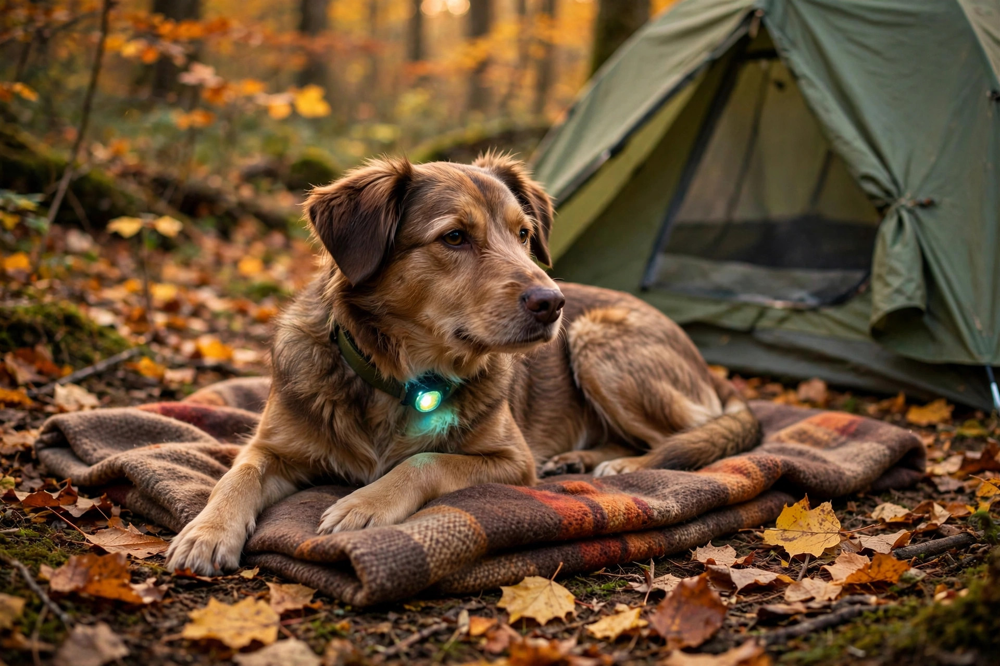

Camping with dogs: rules, setup, and a first-trip plan

Most dog-camping advice starts with a packing list. It should start with the rules, because the rules are the part that can end the trip. Dogs are welcome in many park systems, but the welcome comes with specific, enforceable conditions — a maximum leash length, areas that are off-limits even to leashed dogs, and a ban on leaving the dog unattended that rules out the "quick trip to the store" many first-time dog campers assume is fine. Learn the rules for the system you are visiting, build the dog's own camp setup around them, and rehearse the whole thing in the yard before the first real night.
First, the rules that can end the trip
Ontario Parks states its dog rules plainly, and they are a good model for what to expect across park systems:
- Leash: no longer than 2 metres (6 feet) at all times, except in a designated off-leash area.
- Off-limits areas: dogs are not permitted on beaches or in swimming areas (unless it is a designated dog beach), in comfort stations, in roofed accommodations except designated dog-friendly ones, or anywhere posted as prohibiting domestic animals.
- Never unattended: dogs may not be left unattended, and excessive noise is also a violation.
- Waste: pick up after your dog; many gatehouses stock stoop-and-scoop bags.
- The fine: violations can result in a minimum fine of $95.
- Some campgrounds ban dogs entirely — a short list of Ontario Parks campgrounds does not permit them, so "dogs welcome" is a per-park check, not an assumption.
Parks Canada's guidelines for national parks land in the same place from a wildlife angle: pets stay on a leash or in suitable confinement at all times, must never be left unattended in a vehicle or on a campsite, must not be allowed to chase wild animals — which Parks Canada notes is illegal as well as dangerous — and are excluded from some areas entirely, posted at trailheads and information centres. The pattern across both systems: a leashed, attended, cleaned-up-after dog is welcome; everything else is a rule breach waiting for a complaint.
Decide whether this dog, this park, this weekend works
Run four checks before booking:
- Permission: the specific park and campground allow dogs, on the specific trails and beaches you plan to use.
- Health: vaccinations are current — bring proof of rabies vaccination and make sure ID tags are on the collar — and flea and tick prevention is in place, because a dog in the woods is likely to encounter ticks. A microchip is cheap insurance if the dog gets loose in an unfamiliar place.
- Temperament: the dog can settle near strangers, other dogs, and nighttime wildlife noises without sustained barking. If not, that is a training project before it is a camping trip.
- Coverage: someone in the group is always responsible for the dog. The unattended ban means every swim, shower, and supply run needs a dog plan.
The dog's camp setup: tether, sleep, and food storage
At the site, the dog needs the same three systems you do. A tether or tie-out line (or a long line at the campsite, per veterinary guidance, with the 2-metre leash for trails and walking) gives the dog a defined area that is not underfoot and not tangled around the fire ring. For sleep, the dog gets insulation from the ground — its own pad or blanket — rather than the bare tent floor; ground cold bothers dogs through the night the same way it bothers people, and a familiar-smelling bed from home doubles as a settle-down cue. Bring the dog's normal food in measured portions plus a little extra, its own bowls, a spare leash, towels for mud and wet fur, a first-aid kit that includes tweezers, bandages, and antiseptic, and more waste bags than seems reasonable.
Two habits tie the setup together. Keep the dog's routine as close to home as the site allows — meals, walks, and bedtime at the usual times read as safety signals to a dog in a strange place. And carry the dog's drinking water from a known source rather than relying on streams or lakes at the site; a collapsible bowl on the tether line keeps water available without a trip back to the tap every hour.
Food storage has a wildlife dimension that checklists often miss: Ontario Parks counts empty dog dishes among wildlife attractants, alongside coolers, garbage, and food scraps. Dog food and dishes get stored with everything else scented — in a closed vehicle or a park bear bin — not beside the tent. The leash rule is partly bear policy too: a dog can agitate a bear into acting defensively, and a frightened dog typically runs straight back to its owner, potentially bringing the bear with it. A leashed dog cannot start that sequence.
The backyard trial run: do this before the real trip
- Pitch the tent at home and let the dog investigate it, with treats and rewards for calm behaviour around the gear and with a headlamp or flashlight used nearby so the light is not new.
- Feed the dog its normal meal at the tent, on its own bed, at the normal time — routine is the calming tool.
- Sleep the night (or at least settle for a long evening) with the dog in the tent on its pad.
- In the morning, note honestly what failed: barking at sounds, restlessness, refusing the pad, leash tangles. Fix those at home, where the fix is free.
What success looks like: the dog enters the tent willingly, settles on its own bed, sleeps through ordinary night noises, and walks past the setup gear without excitement. If the trial fails, the first real trip becomes a one-night, close-to-home version rather than a week in the backcountry.
October adjustments: cold ground, early dark, ticks
Most dog-camping guidance is written for summer heat. Shoulder-season trips invert several of the problems. Cold ground makes the dog's sleep insulation non-optional — bring the pad or a folded blanket even for a dog that sleeps on the floor at home. Early darkness means the evening walk happens in the dark: an LED collar or light-up collar keeps the dog visible to you, drivers, and other campers. Tick prevention and the post-hike check matter just as much on October trips: run hands over the dog after every trail, check ears and armpits, and use the tweezers from the first-aid kit for anything attached. Finally, wet October trails mean mud: the towels earn their space, and a dog dried before entering the tent keeps the sleeping area livable for everyone.
FAQ
Can the dog be left in the car while we eat at a restaurant? Under both Ontario Parks and Parks Canada rules, pets are not to be left unattended — including in a vehicle. Plan meals around the dog, or take turns.
How much food should the dog bring? Its normal portions for the trip, plus a modest extra margin for delays and the extra calories of an active day — stored sealed with the rest of the food, never loose in the tent.
What if the park has a dog beach? Designated dog beaches and off-leash exercise areas are the exceptions to the beach ban and the leash rule — use those, and keep the leash on everywhere else.
Note: park rules change and vary by park and season. Confirm the current rules for your specific destination before you go, and follow posted signs and staff direction on site.